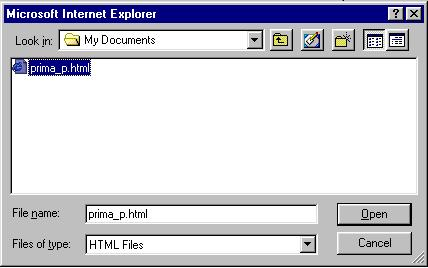
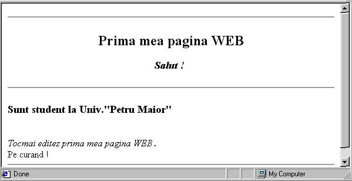
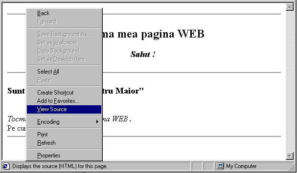
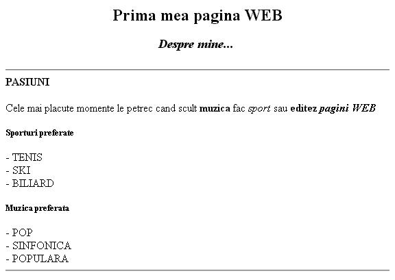

- Se salveaza ca si Text Documents (ANSI) cu numele prima_p.html in contul d-voastra
- Din Internet Explorer cu File-Open deschideti fisierul creat (prima_p.html)

- Trebuie sa vedeti pagina creata sub forma:

Cu "click dreapta" in pagina afisata, cu optiunea View Source se poate vedea sau edita sursa paginii

- Realizati o pagina asemanatoare cu pagina din figura de mai jos:

- Realizati o noua pagina asemanatoare cu pagina din figura de mai sus dar de aceasta data
despre d-voastra.
Liste
-Realizati o pagina in care sa aveti o lista numerotata cu facultatile din universitate
-Realizati o pagina in care sa aveti o lista nenumerotata cu cartierele din Tg.Mures
-Realizati o pagina in care sa aveti o lista de definitii pentru urmatorii termeni:
Sistem de calcul
Sistem de operare
Baze de date
Sisteme de dezvoltare
-Realizati o pagina in care sa aveti o lista imbricata care sa contina facultatile din universitate
si specializarile de la fiecare facultate
-Realizati o pagina in care sa aveti o lista imbricata care sa contina facultatile din universitate
si specializarile de la fiecare facultate precum si o descriere sumara a fiecarei specializari folosind
listele de definitii. Facultatile se vor scrie cu H2, specializarile cu H3
-Realizati o pagina WEB asemnatoare cu pagina din figura de jos:
Imagini
-Copiati cateva imagini in subdirectorul in care lucrati. Pentru a copia imagini din diferite
sit-uri se pozitioneaza cursorul mouse-ului pe imagine si dupa ce se apasa click dreapta,
din meniul afisat se alege optiunea Save image as: -Realizati o pagina in care sa inserati imaginile copiate anterior.
-Afisati imaginile la alte dimensiuni decit cele cu care au fost create
Legaturi
-Realizati o pagina numita pers.html care sa contina datele d-voastra personale
-Realizati o pagina cu numele start.html care sa cuprinda date generale pentru o pagina de
start precum si o legatura spre fisierul pers.html
-Modificati pagina pers.html astfel incat sa avem o legatura de intoarcere spre pagina start.html
-Realizati o pagina hoby.html care sa cuprinda o descriere a pasiunilor d-voastra si o legatura
spre pagina start.html.
-Puneti in pagina start.html o legatura spre pagina hoby.html
-Modificati pagina start si adaugati o lista nenumerotata cu legaturi indepartate de forma:
Univ."Petru Maior" :http://www.upm.ro
Firma producatoare de microprocesoare :http://www.intel.com
Site pentru cautari pe NET:http://www.google.ro
-Modificati pagina hoby.html astfel incat pagina sa cuprinda si capitolele
Sport
Muzica
Filme
-Realizati in pagina hoby.html legaturi interne spre capitolele mai sus amintite:
-Realizati in pagina start.html legaturi interne spre capitolele mai sus amintite:
-Realizati o pagina WEB asemnatoare cu pagina din figura de jos:
Tabele
-Realizati o pagina in care sa aveti un tabel cu facultatile din universitate si specializarile fiecarei facultati.
-Preluati 12 imagini
-Realizati o pagina WEB in care sa inserati un tabel cu cele 12 imagini aranjate intr-un
tabel cu 4 linii si 3 coloane